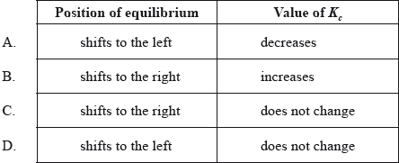

HL Paper 1
Which variable affects the equilibrium constant, Kc?
A. Atmospheric pressure
B. Catalyst
C. Concentration of reactants
D. Temperature
What is the effect of an increase of temperature on the yield and the equilibrium constant for the following reaction?
\[\begin{array}{*{20}{l}} {{\text{2}}{{\text{H}}_{\text{2}}}{\text{(g)}} + {\text{CO(g)}} \rightleftharpoons {\text{C}}{{\text{H}}_{\text{3}}}{\text{OH(l)}}}&{\Delta {H^\Theta } = - 128{\text{ kJ}}} \end{array}\]

Which statements explain why a catalyst is used in the Contact process (shown below)?
\[{\text{S}}{{\text{O}}_2}{\text{(g)}} + \frac{1}{2}{{\text{O}}_2}{\text{(g)}} \rightleftharpoons {\text{S}}{{\text{O}}_3}{\text{(g)}}\]
I. A catalyst lowers the activation energy.
II. A catalyst moves the position of equilibrium towards the product.
III. A catalyst allows the same rate to be achieved at a lower temperature.
A. I and II only
B. I and III only
C. II and III only
D. I, II and III
What is the effect of increasing the temperature in this reaction?
CO2(g) + H2O(l) \( \rightleftharpoons \) H+(aq) + HCO3−(aq) ΔH < 0
A. The pH will decrease.
B. The pH will increase.
C. CO2 pressure will decrease.
D. The equilibrium position will shift to the right.
Which statement is correct for the equilibrium \({{\text{H}}_2}{\text{O(l)}} \rightleftharpoons {{\text{H}}_2}{\text{O(g)}}\) in a closed system at 100 °C?
A. All the \({{\text{H}}_{\text{2}}}{\text{O(l)}}\) molecules have been converted to \({{\text{H}}_{\text{2}}}{\text{O(g)}}\).
B. The rate of the forward reaction is greater than the rate of the reverse reaction.
C. The rate of the forward reaction is less than the rate of the reverse reaction.
D. The pressure remains constant.
Consider the following reversible reaction.
\[{\text{C}}{{\text{r}}_2}{\text{O}}_7^{2 - }{\text{(aq)}} + {{\text{H}}_2}{\text{O(l)}} \rightleftharpoons {\text{2CrO}}_4^{2 - }{\text{(aq)}} + {\text{2}}{{\text{H}}^ + }{\text{(aq)}}\]
What will happen to the position of equilibrium and the value of \({K_{\text{c}}}\) when more \({{\text{H}}^ + }\) ions are added at constant temperature?

The enthalpy change for the dissolution of NH4NO3 is +26 kJ mol–1 at 25 °C. Which statement about this reaction is correct?
A. The reaction is exothermic and the solubility decreases at higher temperature.
B. The reaction is exothermic and the solubility increases at higher temperature.
C. The reaction is endothermic and the solubility decreases at higher temperature.
D. The reaction is endothermic and the solubility increases at higher temperature.
What occurs when the pressure on the given equilibrium is increased at constant temperature?
N2(g) + O2(g) \( \rightleftharpoons \) 2NO(g) ΔH = +180 kJ
A. Kc increases and the position of equilibrium moves to the right.
B. Kc stays the same and the position of equilibrium is unchanged.
C. Kc stays the same and the position of equilibrium moves to the left.
D. Kc decreases and the position of equilibrium moves to the left.
Which of the following will shift the position of equilibrium to the right in the Haber process?
\({{\text{N}}_{\text{2}}}{\text{(g)}} + {\text{3}}{{\text{H}}_{\text{2}}}{\text{(g)}} \rightleftharpoons {\text{2N}}{{\text{H}}_{\text{3}}}{\text{(g)}}\) \(\Delta {H^\Theta } = {\text{92.6 kJ}}\)
I. Decreasing the concentration of \({\text{N}}{{\text{H}}_{\text{3}}}{\text{(g)}}\)
II. Decreasing the temperature
III. Increasing the pressure
A. I and II only
B. I and III only
C. II and III only
D. I, II and III